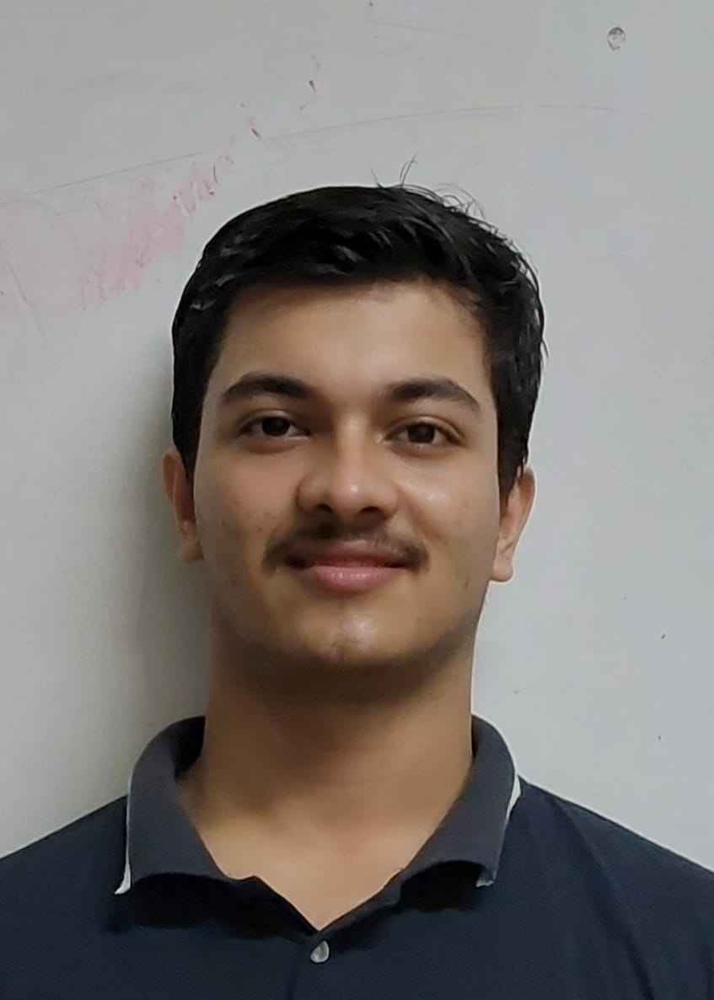

My Profile
Hello everyone! I am Arindom Sarmah, a student of Electronics and Communication Engineering at National Institute of Technology Silchar.
I am enthusiastic as well as curious about quizzing, cricket, coding, web development and reading books.
My quals
Passed Matriculation with 98%
Secured 97%ile in JEE Mains and 92.8% in HS Boards
Have a keen interest towards HTML,CSS and other languages
Won three state level Quizzes organised at Nagaon,Tezpur and Assam University,Silchar
